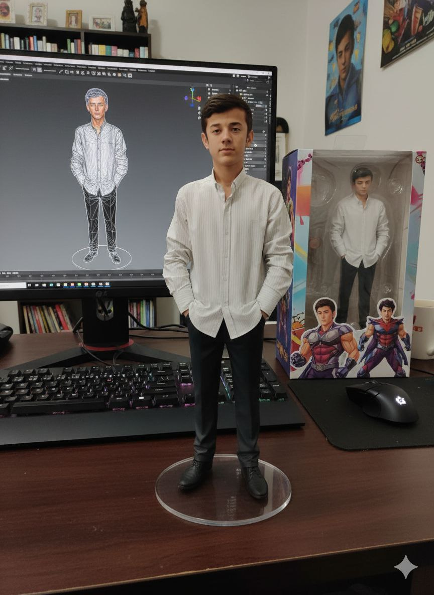

About_Me!
My Journey:
My name is Isroilov Sunnatbek, and I'm on an exciting journey as an aspiring Developer. The tech world is
vast,
and I’m currently channeling my energy into two specific areas: the versatility of Telegram Bots and the vast
reach of YouTube development. Although I'm in the process of specialization, every line of code I write is a
step toward my goal.
Beyond the code, I draw deep inspiration and motivation from the insights and lessons I gain from the world
around us. In the near future, I plan to leverage both Telegram and YouTube to execute my professional goals,
delivering quality work and meaningful content.
